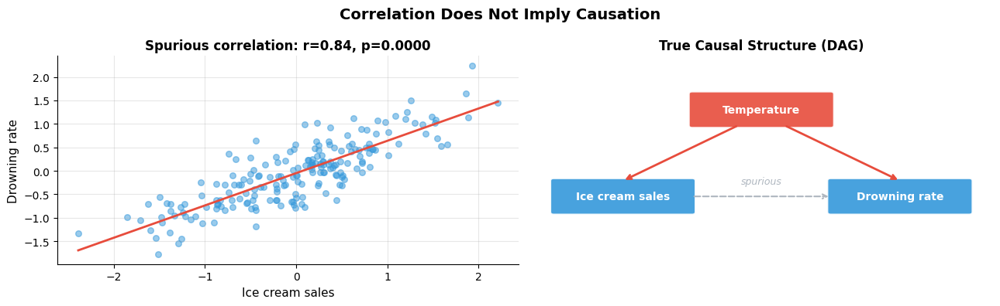
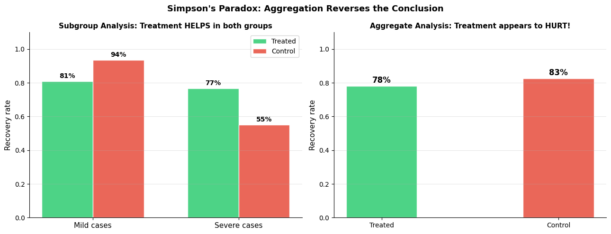
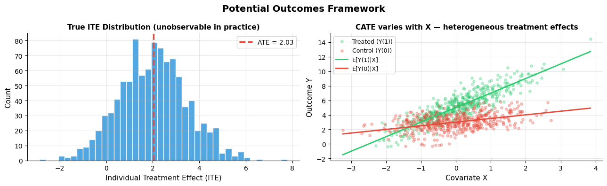

Why does causality matter?#
Topics: Correlation vs Causation · Simpson’s Paradox · Potential Outcomes Framework · Counterfactuals · Fundamental Problem of Causal Inference · SUTVA · Consistency
1. Correlation vs Causation#
What it is#
Correlation: two variables move together — tells us nothing about why
Causation: one variable directly produces a change in another
Most ML models learn correlations — they fail when the environment changes
Key intuition#
Ice cream sales and drowning rates are correlated — both caused by hot weather
A model trained on this correlation would wrongly suggest banning ice cream saves lives
Causal models ask: if we intervene and change X, what happens to Y?
Why it matters for Data Scientists#
Prediction: correlation is enough — predict churn, fraud, demand
Decision making: causation required — does sending a discount cause retention?
Policy: causation required — does the intervention actually work?
Gotchas#
High R² does not mean causal — confounders can create perfect spurious correlations
Feature importance from XGBoost is not causal importance
A/B tests establish causation; observational studies alone do not
import numpy as np
import matplotlib.pyplot as plt
from scipy import stats
np.random.seed(42)
n = 200
# Spurious correlation: both caused by a hidden confounder
temperature = np.random.randn(n)
ice_cream = 0.8 * temperature + np.random.randn(n) * 0.3
drownings = 0.7 * temperature + np.random.randn(n) * 0.3
r, p = stats.pearsonr(ice_cream, drownings)
fig, axes = plt.subplots(1, 2, figsize=(13, 4))
axes[0].scatter(ice_cream, drownings, alpha=0.5, color='#3498DB', s=30)
m, b = np.polyfit(ice_cream, drownings, 1)
x_line = np.linspace(ice_cream.min(), ice_cream.max(), 100)
axes[0].plot(x_line, m*x_line+b, color='#E74C3C', linewidth=2)
axes[0].set_xlabel('Ice cream sales', fontsize=11)
axes[0].set_ylabel('Drowning rate', fontsize=11)
axes[0].set_title(f'Spurious correlation: r={r:.2f}, p={p:.4f}', fontsize=12, fontweight='bold')
axes[0].grid(True, alpha=0.3)
axes[0].spines['top'].set_visible(False); axes[0].spines['right'].set_visible(False)
# True causal structure
import matplotlib.patches as mpatches
ax = axes[1]
ax.set_xlim(0, 10); ax.set_ylim(0, 6); ax.axis('off')
ax.set_title('True Causal Structure (DAG)', fontsize=12, fontweight='bold')
def box(ax, x, y, w, h, label, color):
rect = mpatches.FancyBboxPatch((x, y), w, h,
boxstyle='round,pad=0.07', facecolor=color, edgecolor='white', linewidth=1.5, alpha=0.9)
ax.add_patch(rect)
ax.text(x+w/2, y+h/2, label, ha='center', va='center',
fontsize=10, fontweight='bold', color='white')
box(ax, 3.5, 4.0, 3.0, 0.9, 'Temperature', '#E74C3C')
box(ax, 0.5, 1.5, 3.0, 0.9, 'Ice cream sales', '#3498DB')
box(ax, 6.5, 1.5, 3.0, 0.9, 'Drowning rate', '#3498DB')
ax.annotate('', xy=(2.0, 2.4), xytext=(4.5, 4.0),
arrowprops=dict(arrowstyle='->', color='#E74C3C', lw=2))
ax.annotate('', xy=(8.0, 2.4), xytext=(5.5, 4.0),
arrowprops=dict(arrowstyle='->', color='#E74C3C', lw=2))
ax.annotate('', xy=(6.5, 1.95), xytext=(3.5, 1.95),
arrowprops=dict(arrowstyle='->', color='#AEB6BF', lw=1.5, linestyle='dashed'))
ax.text(5.0, 2.3, 'spurious', ha='center', fontsize=9, color='#AEB6BF', style='italic')
plt.suptitle('Correlation Does Not Imply Causation', fontsize=14, fontweight='bold')
plt.tight_layout()
plt.savefig('correlation_vs_causation.png', dpi=120, bbox_inches='tight')
plt.show()
print(f"Correlation r={r:.2f} is real but the causal relationship is not direct")

Correlation r=0.84 is real but the causal relationship is not direct
2. Simpson’s Paradox#
What it is#
A trend appears in subgroups but reverses when groups are combined
Classic example: treatment appears harmful overall but beneficial in every subgroup
Caused by a confounding variable that is unequally distributed across groups
Key intuition#
Aggregating data without accounting for confounders can completely reverse conclusions
The subgroup analysis is correct — the aggregate is misleading
Always ask: is there a lurking variable that determines both group membership and outcome?
Gotchas#
Simpson’s paradox is not rare — it appears in medical studies, hiring data, sports statistics
The corrected analysis requires conditioning on the confounder
Naive averaging across groups is almost always wrong in causal analysis
import numpy as np
import matplotlib.pyplot as plt
np.random.seed(42)
# Classic Simpson's paradox: treatment vs recovery rate
# Confound: severity (mild vs severe) — sicker patients get more treatment
mild_treated = {'treated': 100, 'recovered': 81} # 81% recovery
mild_control = {'treated': 250, 'recovered': 234} # 93.6% recovery
severe_treated = {'treated': 250, 'recovered': 192} # 76.8% recovery
severe_control = {'treated': 100, 'recovered': 55} # 55% recovery
# Overall (ignoring severity)
total_treated_rec = mild_treated['recovered'] + severe_treated['recovered']
total_treated_n = mild_treated['treated'] + severe_treated['treated']
total_control_rec = mild_control['recovered'] + severe_control['recovered']
total_control_n = mild_control['treated'] + severe_control['treated']
overall_treated = total_treated_rec / total_treated_n
overall_control = total_control_rec / total_control_n
fig, axes = plt.subplots(1, 2, figsize=(13, 5))
# Subgroup rates
groups = ['Mild cases', 'Severe cases']
treated = [mild_treated['recovered']/mild_treated['treated'],
severe_treated['recovered']/severe_treated['treated']]
control = [mild_control['recovered']/mild_control['treated'],
severe_control['recovered']/severe_control['treated']]
x = np.arange(len(groups))
w = 0.35
axes[0].bar(x-w/2, treated, w, color='#2ECC71', alpha=0.85, edgecolor='white', label='Treated')
axes[0].bar(x+w/2, control, w, color='#E74C3C', alpha=0.85, edgecolor='white', label='Control')
axes[0].set_xticks(x); axes[0].set_xticklabels(groups, fontsize=11)
axes[0].set_ylabel('Recovery rate', fontsize=11)
axes[0].set_title('Subgroup Analysis: Treatment HELPS in both groups', fontsize=11, fontweight='bold')
axes[0].set_ylim(0, 1.1); axes[0].legend(fontsize=10)
axes[0].grid(True, alpha=0.3, axis='y')
axes[0].spines['top'].set_visible(False); axes[0].spines['right'].set_visible(False)
for i, (t, c) in enumerate(zip(treated, control)):
axes[0].text(i-w/2, t+0.02, f'{t:.0%}', ha='center', fontsize=10, fontweight='bold')
axes[0].text(i+w/2, c+0.02, f'{c:.0%}', ha='center', fontsize=10, fontweight='bold')
axes[1].bar(['Treated', 'Control'], [overall_treated, overall_control],
color=['#2ECC71', '#E74C3C'], alpha=0.85, edgecolor='white', width=0.4)
axes[1].set_ylabel('Recovery rate', fontsize=11)
axes[1].set_title("Aggregate Analysis: Treatment appears to HURT!", fontsize=11, fontweight='bold')
axes[1].set_ylim(0, 1.1)
axes[1].grid(True, alpha=0.3, axis='y')
axes[1].spines['top'].set_visible(False); axes[1].spines['right'].set_visible(False)
for i, val in enumerate([overall_treated, overall_control]):
axes[1].text(i, val+0.02, f'{val:.0%}', ha='center', fontsize=12, fontweight='bold')
plt.suptitle("Simpson's Paradox: Aggregation Reverses the Conclusion", fontsize=13, fontweight='bold')
plt.tight_layout()
plt.savefig('simpsons_paradox.png', dpi=120, bbox_inches='tight')
plt.show()
print("Subgroup results (correct):")
print(f" Mild cases — Treated: {treated[0]:.1%}, Control: {control[0]:.1%} → treatment HELPS")
print(f" Severe cases — Treated: {treated[1]:.1%}, Control: {control[1]:.1%} → treatment HELPS")
print(f"Aggregate result (misleading):")
print(f" Overall — Treated: {overall_treated:.1%}, Control: {overall_control:.1%} → appears to HURT")
print("Reason: sicker patients receive more treatment → confounds the aggregate comparison")

Subgroup results (correct):
Mild cases — Treated: 81.0%, Control: 93.6% → treatment HELPS
Severe cases — Treated: 76.8%, Control: 55.0% → treatment HELPS
Aggregate result (misleading):
Overall — Treated: 78.0%, Control: 82.6% → appears to HURT
Reason: sicker patients receive more treatment → confounds the aggregate comparison
3. Potential Outcomes Framework (Rubin Causal Model)#
What it is#
Framework for defining causal effects using potential outcomes
For each unit i, define two potential outcomes:
Y_i(1)— outcome if treatedY_i(0)— outcome if not treated
Individual treatment effect:
ITE_i = Y_i(1) - Y_i(0)
Key intuition#
Causality is about comparing what happened vs what would have happened
The counterfactual
Y_i(1-T_i)is never observed — this is the fundamental problemWe can only observe ONE potential outcome per person — the one that actually occurred
Key estimands#
Estimand |
Formula |
Meaning |
|---|---|---|
ITE |
Y_i(1) - Y_i(0) |
Individual causal effect (never observed) |
ATE |
E[Y(1) - Y(0)] |
Average effect across population |
ATT |
E[Y(1)-Y(0) |
T=1] |
CATE |
E[Y(1)-Y(0) |
X=x] |
import numpy as np
import matplotlib.pyplot as plt
np.random.seed(42)
n = 1000
# True data generating process
X = np.random.randn(n) # covariate (e.g. age)
ITE_true = 2.0 + 1.5 * X # true individual treatment effect varies with X
Y0 = 3.0 + 0.5 * X + np.random.randn(n) # potential outcome without treatment
Y1 = Y0 + ITE_true # potential outcome with treatment
# Random assignment
T = np.random.binomial(1, 0.5, n)
Y_obs = T * Y1 + (1 - T) * Y0 # observed outcome — only one per person
ATE_true = ITE_true.mean()
ATE_obs = Y_obs[T==1].mean() - Y_obs[T==0].mean() # estimated from data
print(f"True ATE : {ATE_true:.3f}")
print(f"Estimated ATE : {ATE_obs:.3f} (close because treatment is random)")
print(f"True ITE range : [{ITE_true.min():.2f}, {ITE_true.max():.2f}]")
print(f"Counterfactuals are NEVER observed — we see either Y(1) or Y(0), never both")
fig, axes = plt.subplots(1, 2, figsize=(13, 4))
# ITE distribution
axes[0].hist(ITE_true, bins=40, color='#3498DB', alpha=0.85, edgecolor='white')
axes[0].axvline(ATE_true, color='#E74C3C', linewidth=2.5, linestyle='--',
label=f'ATE = {ATE_true:.2f}')
axes[0].set_xlabel('Individual Treatment Effect (ITE)', fontsize=11)
axes[0].set_ylabel('Count', fontsize=11)
axes[0].set_title('True ITE Distribution (unobservable in practice)', fontsize=11, fontweight='bold')
axes[0].legend(fontsize=10); axes[0].grid(True, alpha=0.3)
axes[0].spines['top'].set_visible(False); axes[0].spines['right'].set_visible(False)
# ITE varies with covariate
axes[1].scatter(X[T==1], Y_obs[T==1], alpha=0.3, s=15, color='#2ECC71', label='Treated (Y(1))')
axes[1].scatter(X[T==0], Y_obs[T==0], alpha=0.3, s=15, color='#E74C3C', label='Control (Y(0))')
x_sorted = np.sort(X)
axes[1].plot(x_sorted, 3.0 + 0.5*x_sorted + (2.0 + 1.5*x_sorted),
color='#2ECC71', linewidth=2, label='E[Y(1)|X]')
axes[1].plot(x_sorted, 3.0 + 0.5*x_sorted,
color='#E74C3C', linewidth=2, label='E[Y(0)|X]')
axes[1].set_xlabel('Covariate X', fontsize=11)
axes[1].set_ylabel('Outcome Y', fontsize=11)
axes[1].set_title('CATE varies with X — heterogeneous treatment effects', fontsize=11, fontweight='bold')
axes[1].legend(fontsize=9); axes[1].grid(True, alpha=0.3)
axes[1].spines['top'].set_visible(False); axes[1].spines['right'].set_visible(False)
plt.suptitle('Potential Outcomes Framework', fontsize=14, fontweight='bold')
plt.tight_layout()
plt.savefig('potential_outcomes.png', dpi=120, bbox_inches='tight')
plt.show()
True ATE : 2.029
Estimated ATE : 2.201 (close because treatment is random)
True ITE range : [-2.86, 7.78]
Counterfactuals are NEVER observed — we see either Y(1) or Y(0), never both

4. SUTVA & Consistency Assumptions#
SUTVA — Stable Unit Treatment Value Assumption#
Two components:
No interference — one unit’s treatment does not affect another unit’s outcome
No hidden treatment versions — treatment is well-defined and the same for everyone
When SUTVA is violated#
Interference/spillover — vaccinating one person protects their neighbors (herd immunity)
Network effects — giving a user a new feature affects connected users
Market effects — a discount to some users changes prices for others
Consistency assumption#
The observed outcome equals the potential outcome under the treatment received
Y_i = Y_i(T_i)— what we observe is what would have happened under that treatmentViolated when: treatment version matters (e.g. different doses), measurement error
What to do if violated#
SUTVA violation → use interference-aware estimators, cluster randomization, network causal inference
Consistency violation → precisely define treatment, check measurement process
Interview Q&A#
Why can’t we just compare treated vs untreated users to estimate causal effects?
Selection bias — treated and untreated groups differ systematically (confounders)
The difference in outcomes reflects both the treatment effect AND pre-existing differences
What is the fundamental problem of causal inference?
We can never observe both Y_i(1) and Y_i(0) for the same unit at the same time
We must estimate the counterfactual from other units — requiring assumptions
When is ATE vs ATT more relevant?
ATE → evaluating a policy that would apply to everyone
ATT → evaluating a program that only applies to those who opt in
Gotchas#
SUTVA is almost always violated to some degree in social/network settings — document the violation and assess its magnitude
Consistency seems obvious but fails when treatment is vaguely defined (e.g. ‘exercise more’)
All downstream causal methods assume SUTVA — it is the foundational assumption